3 Descriptive Statistics
3.1 Descriptive Statistics
Before running your final statistical analysis, it’s useful to look at descriptive statistics and visualizations of your variables. This can help you avoid running statistics that may not be appropriate for your data, such as running a linear correlation on two variables that have a nonlinear relationship.
3.1.1 Descriptives for Continuous Data
For this example, we’ll be using the variable AgreeablenessSum from our example Big 5 Data Set. It is a simple sum score of the ten scale items (\(A1\)-\(A10\)) that measure Agreeableness.
To get started, we can use the summary function on AgreeablenessSum to get some basic descriptives. Recall that we can specify a specific column within a dataset with the format: dataset_name\$variable_name
summary(big5$AgreeablenessSum)## Min. 1st Qu. Median Mean 3rd Qu. Max.
## 21.00 30.00 32.00 32.07 34.00 48.00The output of this function returns the minimum value, information about the median and interquartile range, the mean, and the maximum value. If there were missing values, they would also appear here as an “NA” column. These data are squeaky clean for demonstrative purposes, but looking at the summary output can also be useful for data cleaning. For example:
Do the minimums and maximums make sense for the scale used? How much missing data is there? Does that seem reasonable for how your data were collected?
There may be other descriptive stats you’re interested in, such as measures of variability (variance, standard deviation). The code block below provides several functions that return different descriptive statistics:
mean(big5$AgreeablenessSum) ##mean## [1] 32.068var(big5$AgreeablenessSum) ##variance## [1] 13.314sd(big5$AgreeablenessSum) ##standard deviation## [1] 3.648836IQR(big5$AgreeablenessSum) ##interquartile range## [1] 4sum(is.na(big5$AgreeablenessSum)) ##total number of missing observations## [1] 0table(big5$AgreeablenessSum) ##frequency tables##
## 21 22 23 24 25 26 27 28 29 30 31 32 33 34 35 36 37 38 39 40 41 42 43 48
## 2 1 3 5 2 15 19 27 38 46 55 79 51 46 36 22 16 14 9 5 2 5 1 13.1.2 Descriptive Plots for Continuous Variables
While looking at numeric descriptions of variables can be useful, it’s much easier to plot variables to look at their distributions. For example, we can create a boxplot to visualize nearly all of the information provided in the summary output:
boxplot(big5$AgreeablenessSum,
horizontal = TRUE, ##orient the plot horizontally
main = "Boxplot of Agreeableness Variable", ##name the plot
xlab = "Agreeableness Sum Score") ##label the x-axis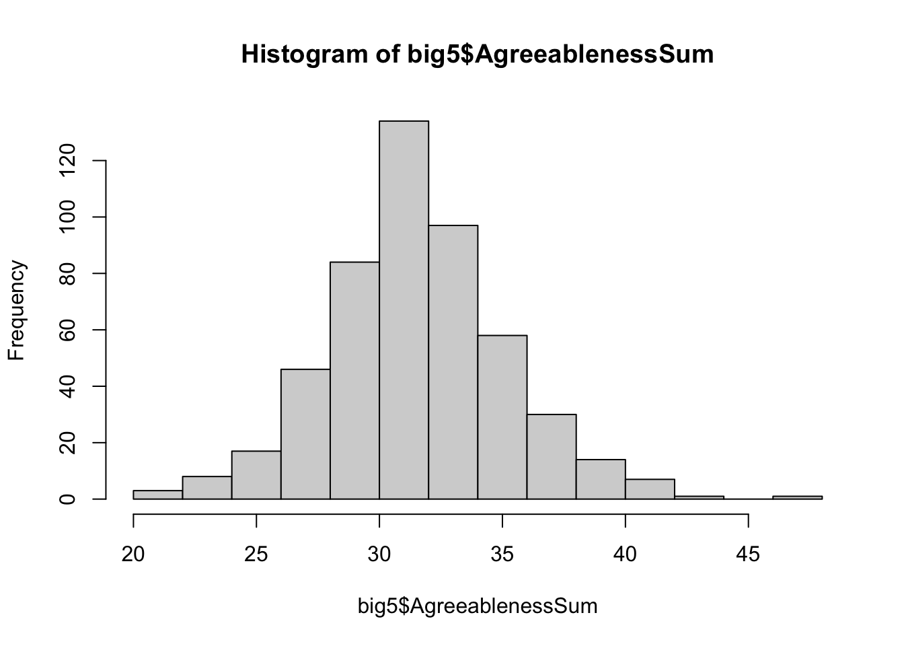
We could also look at the shape of our distribution using a histogram, or density plot:
##create a histogram
hist(big5$AgreeablenessSum)
##Use the breaks argument to adjust bins by providing:
##A vector of user-specified cutoff values:
hist(big5$AgreeablenessSum, breaks=c(15,22,23,36,42,60)) 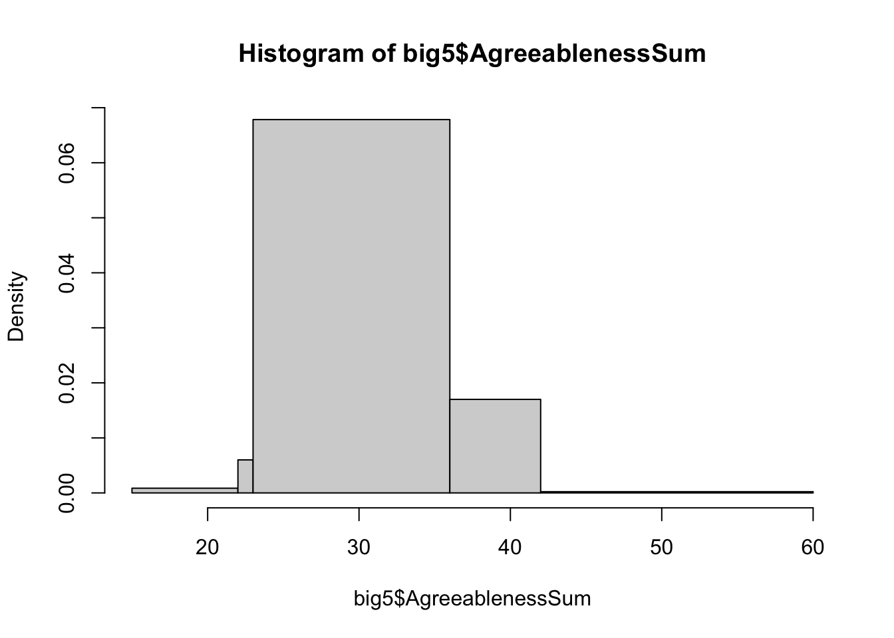
##A function, like seq(), that computes the breakpoints:
hist(big5$AgreeablenessSum, breaks=seq(21, 48, by = 3)) 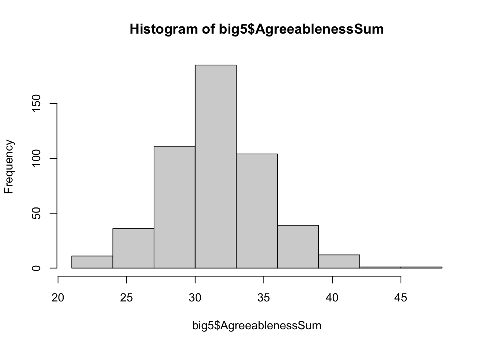
##A value representing the number of desired bins:
hist(big5$AgreeablenessSum, breaks=22) 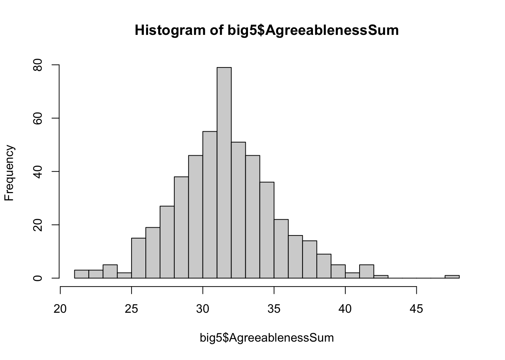
##create a density plot
density_values <- density(big5$AgreeablenessSum)
plot(density_values)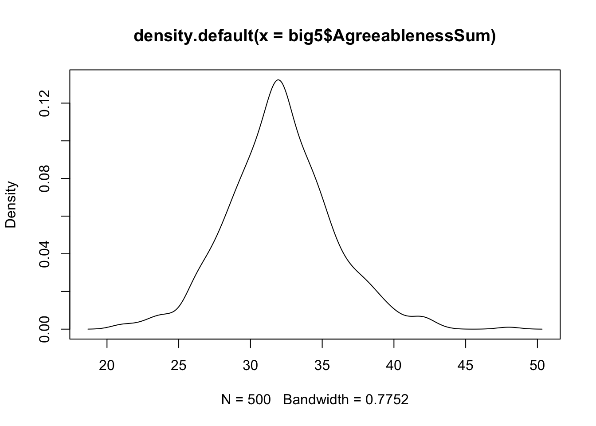
While these plots get the job done to look at our distributions, they may not be
as presentable as we’d like for posters of presentations. We can use a special set
of functions in R’s ggplot2 package to make more attractive graphs!
In ggplot, we build graphs in layers. Let’s say I want to remake my histogram of
Agreeableness in ggplot. First, we need to create the axes and background of the plot:
library(ggplot2)
ggplot(data= big5, aes(x=AgreeablenessSum))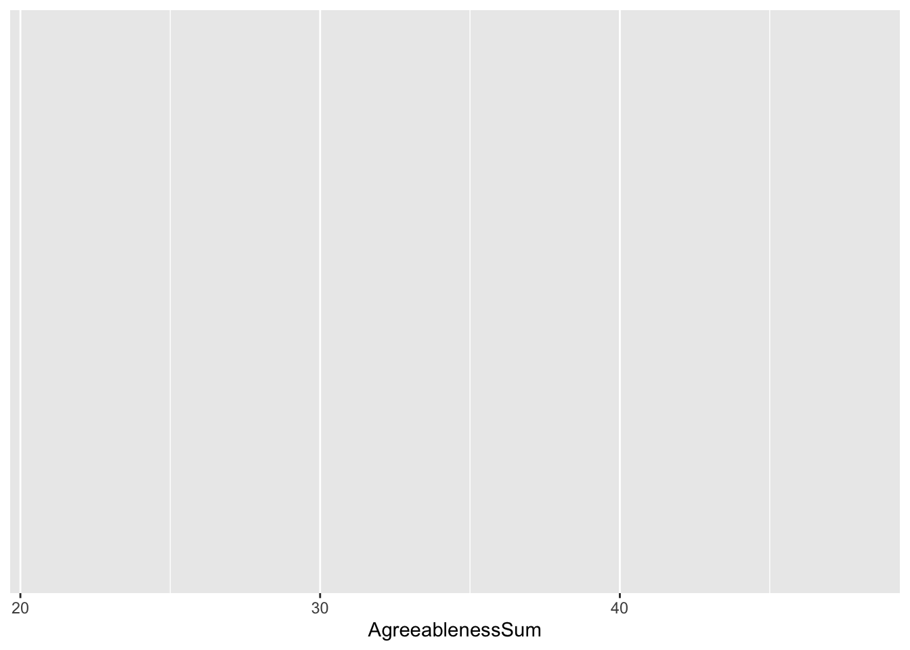
In this first line of code, we’ve specified the dataset we’d like to work with, as
well as the variables we’d like to plot in the aes() function. The argument x
used in the aes() function corresponds to the x-axis of our graph. Now, we’re going
to create the second layer of a graph using a geom. Geoms are specific to ggplot, and
help us define the graph we’d like to create:
ggplot(data= big5, aes(x=AgreeablenessSum))+ ##our original line of code
# add a plus sign at the end of each line before adding a new line
geom_histogram(bins=25)## new line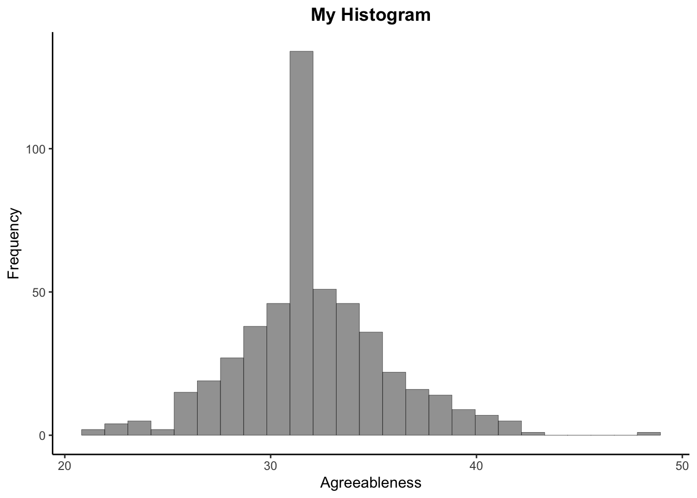
Now we’ve created a basic histogram in ggplot! We can continue to layer code onto our plots to get them to look the way we’d like:
ggplot(data= big5, aes(x=AgreeablenessSum))+
geom_histogram(bins=25, alpha = .6, color="black", size = .1)+
ggtitle("My Histogram")+
labs(y = "Frequency", x="Agreeableness")+
theme_classic()+
theme(plot.title = element_text(face = "bold", hjust = .5))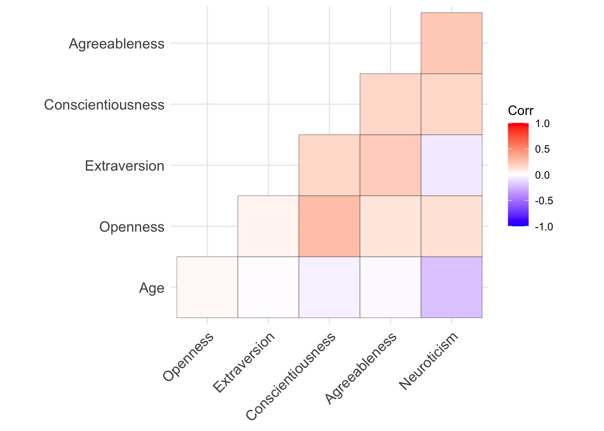
The ggplot2 package is very comprehensive, and cannot be gone over in its entirety here. However, I encourage you to check out the link below and try to google any specific issues you might be having. GGplot is fairly well documented, and there are a lot of good resources out there! There will also be relevant plots and code throughout this handout.
3.1.3 Categorical Variables
We can also look at descriptive statistics for categorical variables, although
arithmetic values like means will no longer be available to us. Instead, we can
visualize frequency of levels within a categorical variable. For instance, maybe we
are interested in looking at how many observations in our data come from
each continent. We can do this using the table() function:
table(big5$continent)##
## Africa Americas Asia Europe Oceania
## 100 100 100 100 100We are also often interested in looking at the breakdown of our sample across multiple categorical variables. How many folks within each continent are male or female? If we include two categorical variables in our table function, we will get table that returns our sample broken down by both groups. In the following output, our sample from Africa has 35 men (category 1) and 65 women (category 2).
table(big5$continent, big5$gender)##
## 1 2 3
## Africa 35 65 0
## Americas 38 59 2
## Asia 49 50 1
## Europe 38 62 0
## Oceania 38 62 03.1.4 Plots of Categorical Data
Barplots are a usual way to visualize and compare categorical groups. Here is a basic template for a frequency bar in ggplot:
ggplot(data=subset(big5, !is.na(engnat)), aes(as.factor(engnat)))+
geom_bar()+ ##geom that specifies I want a barplot
ggtitle("Native English Speaker Status")+ ##title
labs(x= "Native English Speaker")+ ##axis labels
theme_classic()+ ##get rid of gridlines/grey background
theme(plot.title = element_text(hjust = .5)) ## center title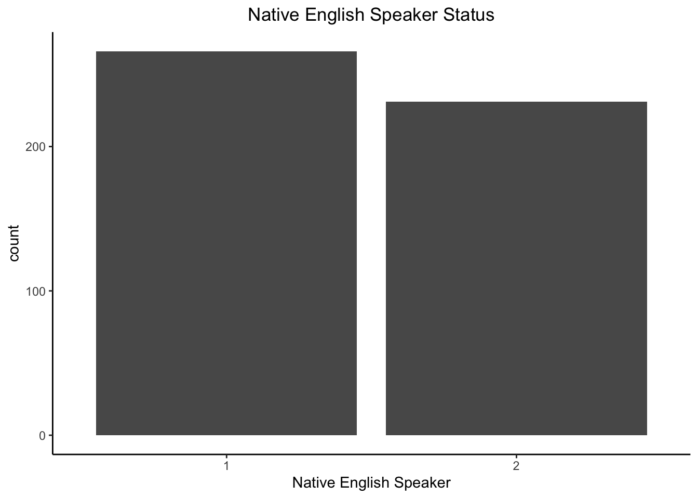
3.1.5 Descriptive Plots of Multiple Variables
Very often, we want graphs that help us visualize the trends in a continuous variable across different levels of a categorical variable. For instance, does agreeableness differ on average across people in different continents?
Before plotting this in ggplot, we need to summarize our data. Since we’re interested in averages, we need to get the average agreeableness score within each continent. We can do this with a set of functions from the dplyr() package in R.
group_by(): Organizes data by levels of a categorical variablesummarize(): Performs some operation on your data%>%: This is a special operator in dyplr called a “pipe”. It allows you to break up a set of actions on a dataset across multiple lines. When you see a pipe, you can read it as “and then” in the code:
library(dplyr)
##create a new object called "graphdata"
graphdata<- big5 %>% ##take our data.. AND THEN
group_by(continent) %>% ##Group that data by continent... AND THEN
summarize(avg= mean(AgreeablenessSum)) ##Take the mean of the AgreeablenessSum data (which is grouped by continent)
print(graphdata)## # A tibble: 5 × 2
## continent avg
## <chr> <dbl>
## 1 Africa 31.9
## 2 Americas 31.4
## 3 Asia 34.0
## 4 Europe 31.3
## 5 Oceania 31.8We’ve created a new object in R that shows the levels of continent that we grouped the data by, as well as the mean Agreeableness scores for each continent group. We can now use ggplot() to graph the information in this data. Notice that in the initial ggplot function, the following has changed:
- For the data argument, I”m calling my new object “graphdata” instead of our original dataset “big5”
- The x argument “continent” references our column of groups in “graphdata”
- I’ve added a new argument called y in the
aes()function. This specifies the variable we’d like to graph on our y axis. In this case, I want to graph the column of average Agreeableness stored in the “avg” column of our graphdata object
I’ve added another new argument called fill in our aes() argument. Fill is an argument that colors the bars of the graph differently by levels of a group. In this case, I have filled the bars by the same variable that I’m graphing on the x axis (continent). This is a trick to get all the bars to be different colors!
ggplot(data= graphdata, aes(x=continent, y=avg, fill=continent))+
geom_bar(stat="identity")+ ##geom that specifies I want a barplot
ggtitle("Agreeableness Across Continents")+ ##title
labs(x= "Continents", y="Agreeableness")+ ##axis labels
theme_classic()+ ##get rid of gridlines/grey background
scale_fill_manual(values=natparks.pals("Yellowstone", 5))+ ##change the colors!
theme(plot.title = element_text(hjust = .5)) ## center title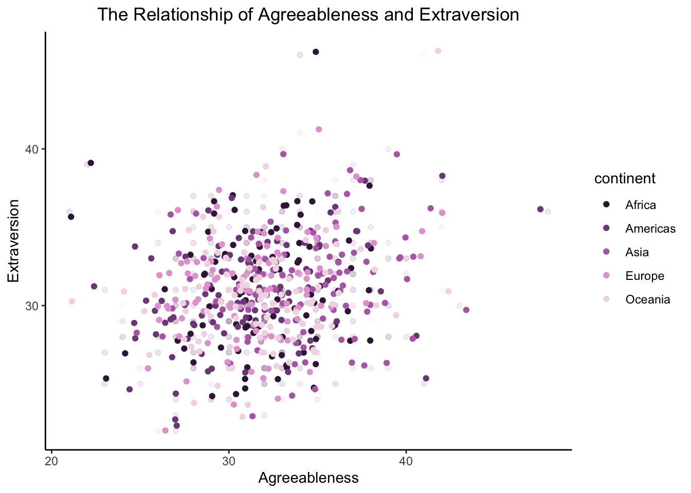
Here is another example of plotting multiple variables. In the graph below, I’ve created a scatterplot between two continuous variables, Agreeableness and Extraversion, and used the color argument to color the individual data points by which continent that participant is from:
ggplot(data=big5, aes(x=AgreeablenessSum, y=ExtraversionSum, color=continent))+
geom_point(alpha=.1)+ ##geom that specifies I want a scatterplot
geom_jitter(width=1.5)+ ##helps get rid of overlapping points
theme_classic()+
scale_color_manual(values=natparks.pals("Arches2", 5))+
ggtitle("The Relationship of Agreeableness and Extraversion")+ ##title
labs(x= "Agreeableness", y="Extraversion")+ ##axis labels
theme(plot.title = element_text(hjust = .5)) ## center title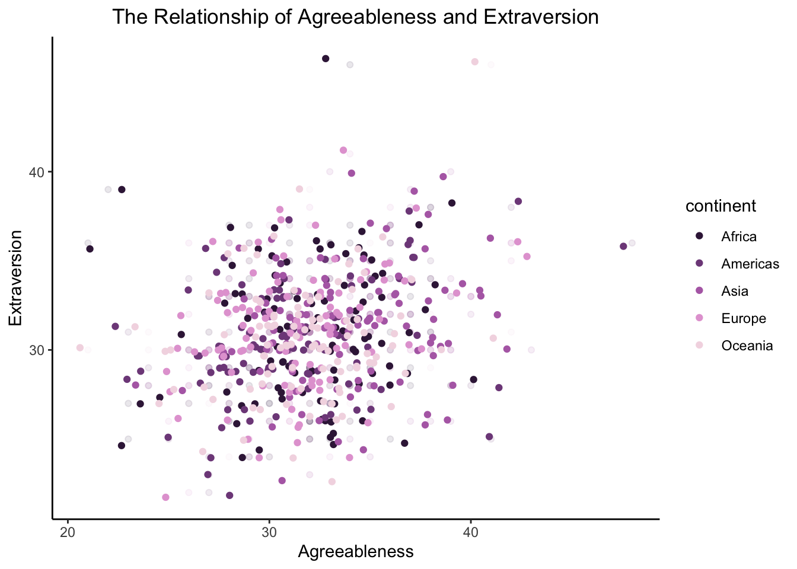
Remember, these are just illustrations of the things you can do in ggplot2. Just because you can use lots of colors doesn’t necessarily mean you should :-). In this graph, color-coding by continent might make the graph more difficult to interpret.